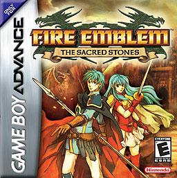

Here you can find a timeline of all the main series Fire Emblem games, when they were released, and on what console!
Please note: All games will have their North American release dates unless specified with "(Japan Only)" as the first couple games were not released outside of Japan.
| Game |
Release Date |
Console |
Cover Art |
| Shadow Dragon and the Blade of Light |
(Japan Only) April 20, 1990 |
Family Computer |
|
| Gaiden |
(Japan Only) March 14, 1992 |
Family Computer |
|
| Mystery of the Emblem |
(Japan Only) January 21, 1994 |
Super Famicom |
|
| Genealogy of the Holy War |
(Japan Only) May 14, 1996 |
Super Famicom |
|
| Thracia 776 |
(Japan only) January 21, 2000 |
Super Famicom |
|
| The Binding Blade |
(Japan only) March 29, 2002 |
Game Boy Advance |
|
| The Blazing Blade (Fire Emblem in the west, as it was the west's first title) |
November 3, 2003 |
Game Boy Advance |
|
| The Sacred Stones |
May 23, 2005 |
Game Boy Advance |
 |
| Path of Radiance |
October 17, 2005 |
Nintendo GameCube |
 |
| Radiant Dawn |
November 5, 2007 |
Nintendo Wii |
 |
| Shadow Dragon |
February 16, 2009 |
Nintendo DS |
|
| New Mystery of the Emblem |
(Japan only) July 15, 2010 |
Nintendo DS |
 |
| Awakening |
February 4, 2013 |
Nintendo 3DS |
|
| Fates |
June 25, 2015 |
Nintendo 3DS |
|
| Echoes: Shadows of Valentia |
May 19, 2017 |
Nintendo 3DS |
|
| Three Houses |
July 26, 2019 |
Nintendo Switch |
|